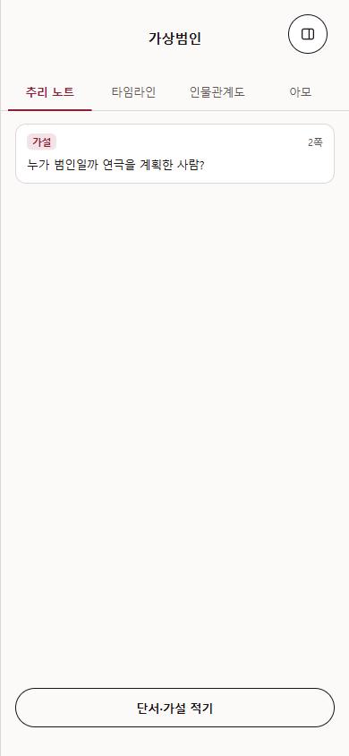
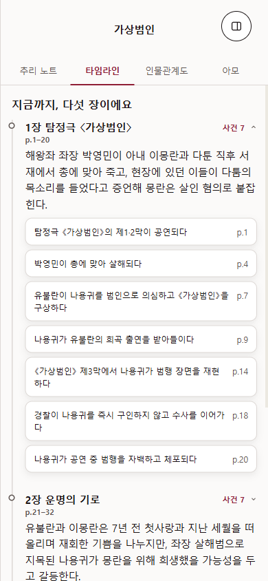
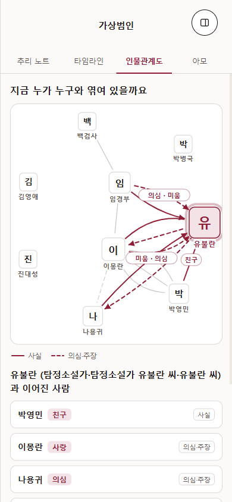
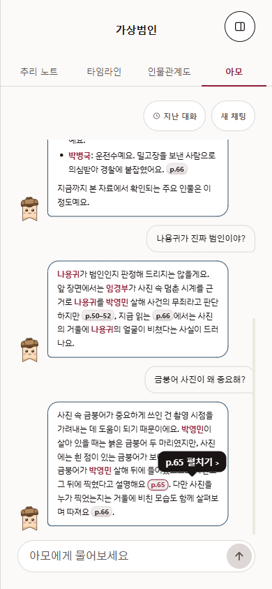

싸비 기능 탭 전후 비교
추리 노트, 타임라인, 인물관계도, 아모 네 탭을 「가상범인」 66/68쪽 상태에서 실제로 눌러 보고 평가했습니다. 왼쪽은 2026-11-19 운영 화면 캡처, 오른쪽은 같은 데이터로 고쳐 그린 시안입니다.
A추리 노트: 빈 화면 대신 바로 시작할 거리
뭔가 허전함. 사용자가 바로바로 뭔가를 할 수 있게끔 유도했으면.
노트를 적는 방법이 버튼 하나뿐이고, 적고 난 노트로 할 수 있는 것도 없습니다. 노트가 쌓여도 종류(단서·궁금한 점·가설)별로 나뉘지 않아 추리의 진행이 보이지 않습니다.

가상범인
66쪽 · 5장 의외의 결말에서 적어요
지금 무엇이 걸리나요?
아직 풀지 못한 것 1
누가 범인일까 연극을 계획한 사람?
모은 단서 0
- 빈 화면 맨 위에 "지금 무엇이 걸리나요?"와 종류별 시작 버튼 3개를 둡니다. 누르면 그 종류와 현재 쪽수(66쪽)가 이미 골라진 작성 창이 열려, 고를 것 없이 바로 쓰면 됩니다. 아래쪽 "단서·가설 적기" 버튼은 이 버튼들과 역할이 겹쳐서 뺐습니다.
empty-statesredundant-entry - 이미 있는 기능인 "본문 꾹 누르기 → 노트에 적기"를 한 줄로 알려 줍니다. 지금은 이 기능을 알 방법이 없습니다.
- 노트를 "아직 풀지 못한 것"(궁금한 점·가설)과 "모은 단서"로 나눕니다. 브리핑 화면에서 이미 쓰는 "아직 풀지 못한 것" 분류와 같습니다.
- 가설 노트에 "아모와 따져 보기"를 붙여, 노트 내용을 인용한 채로 아모 탭을 엽니다. "풀었어요"는 가설·궁금한 점을 해결됨으로 옮기는 새 기능 제안입니다.
B타임라인: 핵심 사건만 먼저, 나머지는 접기
텍스트 덩어리로만 느껴지고 사건들도 너무 많아 피로함.
장 요약이 3~4줄씩 그대로 펼쳐져 있고, 장을 열면 사건 카드 7개가 같은 크기·같은 무게로 쌓입니다. 4개 장의 사건을 합치면 26개라서 훑어보기 어렵습니다. 인물 기준으로 좁혀 볼 방법도 없습니다.

가상범인
지금까지 읽은 4장 사건 26
좌장 박영민이 서재에서 총에 맞아 죽고, 다툼을 들었다는 증언으로 몽란이 붙잡힌다.
- p.4박영민이 총에 맞아 살해되다
- p.14《가상범인》 제3막에서 나용귀가 범행 장면을 재현하다
- p.20나용귀가 공연 중 범행을 자백하고 체포되다
유불란과 이몽란이 재회하고, 나용귀의 희생 가능성을 두고 갈등한다.
사건 7유불란이 괴상한 신사를 쫓아 복면 회원들의 비밀 회합에 끼어든다.
사건 5몽란의 시신이 발견되고, 임경부는 나용귀의 자백을 거짓으로 본다.
사건 7다 읽으면 정리돼요.
- 기본 보기를 "핵심만"으로 두고 장마다 핵심 사건 2~3개만 보여 줍니다. 나머지는 "나머지 사건 4개 보기"로 접습니다. 처음 보이는 사건 수가 26개에서 3개(펼친 장 하나)로 줄어듭니다.
progressive-disclosurecontent-priority - 장 요약은 한두 줄로 줄이고 접힌 장은 한 줄만 보여 줍니다. 사건은 왼쪽에 쪽수, 오른쪽에 문장을 둔 행으로 바꿔 쪽수로 바로 훑을 수 있게 했습니다.
- "유불란", "나용귀" 같은 인물 칩으로 그 인물이 나온 사건만 남깁니다. 범인을 좇는 추리소설 독자가 가장 자주 할 확인입니다.
- 제목을 실제 읽은 장 수에 맞게 "지금까지 읽은 4장"으로 고칩니다. 지금은 5장을 읽는 중인데 "다섯 장이에요"라고 나옵니다.
C인물관계도: 한 사람을 중심에 두고 보기
관계가 생길수록 선이 많아지며 복잡해지고, 아래 인물 정리도 한눈에 들어오지 않음.
9명 사이에 선 29개가 한꺼번에 그려지고, 같은 두 사람 사이에도 관계마다 선이 따로 생겨 겹칩니다. 관계가 하나도 없는 김영애·진대성·박병국도 자리를 차지합니다. 아래 목록은 유불란 기준 8줄인데 실제로는 4명입니다.

가상범인
누구를 중심으로 볼까요
유불란과 직접 이어지지 않은 인물: 백검사 · 김영애 · 진대성 · 박병국. 누르면 그 사람이 중심이 됩니다.
- 그래프에는 고른 한 사람과 그 사람에게 직접 이어진 사람만 그립니다. 관계가 늘어도 선은 "이어진 사람 수"만큼만 늘어나서, 지금처럼 전체가 엉키지 않습니다. 중심 인물은 위쪽 칩이나 아래 이름을 눌러 바꿉니다.
progressive-disclosure - 두 사람 사이 관계가 여러 개여도 선은 하나만 긋고, 이름표에 대표 관계와 개수("연인 외 2")를 적습니다. 사실이 하나라도 있으면 실선입니다.
- 아래 목록은 사람마다 한 줄, 관계는 칩으로 나열합니다. 4명이 스크롤 없이 한 화면에 들어옵니다. 사실은 채운 칩, 의심·주장은 점선 칩입니다.
color-not-only - 관계가 없는 인물은 그래프에서 빼고 아래 한 줄로 모읍니다. 지금은 김영애·진대성·박병국이 선 없이 그래프 공간을 차지합니다.
- 원래 있던 "전체 보기"는 중심 칩 줄 끝에 "모두" 칩으로 남겨, 처음 구조를 원하는 사람도 볼 수 있게 합니다(그림에서는 생략).
D아모: 읽기 쉬운 답, 근거 확인, 다음 질문
실제 호출해 보며 평가해 달라.
답의 내용과 속도는 좋습니다. 불편한 곳은 화면입니다. 답변 글자가 12px이고, 근거 쪽수 칩은 28×14px라 손가락으로 맞히기 어렵습니다. 누르면 "p.65 펼치기" 말풍선이 한 번 더 떠서, 근거 문장을 보려면 두 번 눌러야 합니다. 답이 끝나면 추천 질문도 사라져 다음에 무엇을 물을지 막힙니다.

가상범인
- 답변 글자를 12px에서 15px로 키웁니다. 읽기 본문(18px), 탭 글자(14px)와 비교해 지금은 대화가 가장 작게 보입니다.
readable-font-size - 쪽수 칩은 높이 26px로 키우고, 실제로 누르는 영역은 44px까지 넓힙니다. 누르면 말풍선 대신 그 쪽의 근거 문장을 답변 안에 바로 펼칩니다. 본문으로 넘어가는 건 아래 "p.65 펼치기"로 따로 둡니다.
touch-target-sizeno-precision-required - 답 아래에 "단서로 저장"을 둡니다. 아모가 찾아 준 근거를 추리 노트(A)로 바로 보낼 수 있어서 두 탭이 이어집니다.
- 답이 끝나면 이어서 물을 만한 질문 2개를 보여 줍니다. 이 질문은 같은 답변 호출에서 함께 만들면 런타임 LLM 호출이 늘지 않습니다(R9).
- 그림에 없는 수정 하나: 추천 질문 칩은 지금 입력칸만 채우고, 보내려면 한 번 더 눌러야 합니다. 칩은 누르면 바로 보내고, 고쳐 쓰고 싶은 사람은 입력칸에 직접 쓰게 합니다.
9명을 역할과 함께 정리했고, 모두 66쪽까지의 내용이었습니다. 근거 쪽수는 마지막 항목(박병국 p.66)에만 붙었습니다. 인물관계도 데이터와 같은 사람들을 다루니, 인물 이름을 누르면 관계도 탭으로 가는 연결이 있으면 좋겠습니다.
"범인인지 판정해 드리지는 않을게요"로 시작한 뒤, p.50–52의 무죄 판단과 p.66의 거울 단서를 대비해 보여 줬습니다. 근거는 좋지만 첫 문장이 거절처럼 들립니다. 확인된 것부터 말하는 방향(CLAUDE.md R10, 2026-10-21 요구)에 맞춰 "지금까지 드러난 단서는 이래요"로 시작하는 편이 낫습니다. 화면이 아니라 답변 지시문의 문제입니다.
p.65·p.66을 근거로 촬영 시점 단서라는 점을 정확히 설명했습니다. 시안 D의 답변 문장은 이 실제 답을 거의 그대로 쓴 것입니다.
시안에서 실제와 다른 점
- "지금" 이미지는 ego lite(Chromium)에서 iPhone 크기로 흉내 내 찍은 운영 화면입니다. 실제 iPhone Safari와는 렌더링이 조금 다를 수 있습니다.
- "바꾼 뒤"는 HTML로 그린 그림이고 코드에는 반영하지 않았습니다. 장 요약, 사건, 관계, 아모 답변, p.65 인용문은 운영 화면의 실제 텍스트입니다. 다만 장 요약은 한두 줄로 줄여 다시 썼습니다.
- 타임라인의 "핵심 사건"은 지금 데이터에 없는 구분입니다. 배치 생성 단계에서 사건마다 중요도를 함께 만들어야 합니다(런타임 LLM 호출 아님). 1장에서 고른 3개는 예시입니다.
- 인물 칩으로 사건 거르기, "풀었어요", "단서로 저장", 이어 묻기 질문은 새 기능 제안입니다. "아모와 따져 보기"는 지금 있는 인용 기능을 노트에도 쓰자는 제안입니다.
- 인물관계도 이름표 "연인 외 2"는 유불란-이몽란 관계 3개(연인·사랑·사랑)를 줄인 표기입니다. 관계 방향(누가 누구를)은 이 시안에서 다루지 않았습니다.
- 평가 중 아모에 질문 3개를 실제로 보냈습니다(대화 기록이 운영에 남음). 문장을 고르려던 드래그가 스와이프로 처리되어 진도가 66→65쪽으로 바뀌었고, 바로 66쪽으로 되돌렸습니다.